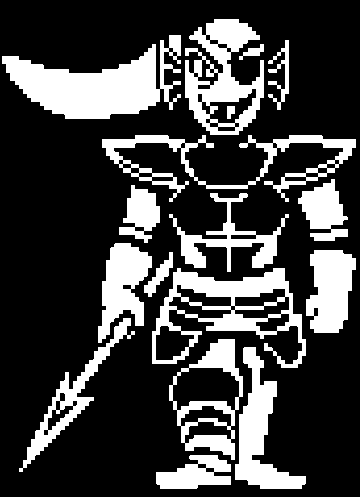

No fim da tarde de ontem, uma comoção tomou conta da pacata Rota 4, próxima às Cataratas. Testemunhas relataram uma intensa batalha entre
nossa gloriosa Capitã da Guarda Real, Undyne, a Impiedosa, e o tão falado humano fugitivo, que vem sendo motivo de cochichos e suspiros
nervosos nas últimas semanas.
Segundo relatos de algumas bolhas flutuantes e dois Temmies de passagem, o confronto foi "ÉPICO" (palavras deles, não minhas). Undyne surgiu em cena
com seu característico estrondo de lanças brilhantes e olhar de peixe determinado, bloqueando a rota com um grito de guerra que fez até as flores
ecoarem em solidariedade.
“HUMANO! VOCÊ NÃO VAI MAIS FUGIR!” – teria bradado Undyne, segundo um Echo Flower local.
O humano, descrito como pequeno, determinado e meio confuso, respondeu com... silêncio. Aparentemente, ele(a) só olhou de volta com olhos brilhando
de DETERMINAÇÃO
Ao que tudo indica, a batalha terminou com o humano fugindo por entre as rochas, enquanto Undyne, exausta mas irredutível, desapareceu entre as águas, prometendo capturar o forasteiro.
A batalha foi só o começo?
Será que o humano realmente merece piedade?
Ou... será que há mais nessa história do que nos disseram?
Por enquanto, ficamos com perguntas. E uma certeza:
Ninguém mexe com Undyne e sai ileso.

|